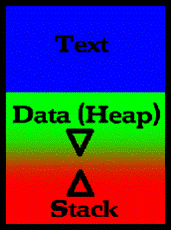
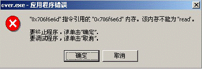
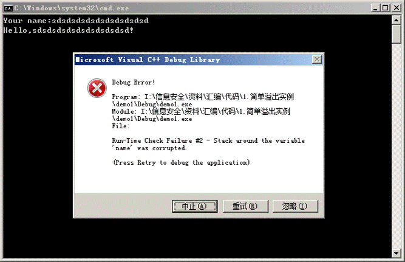
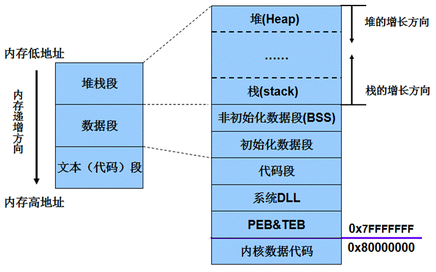
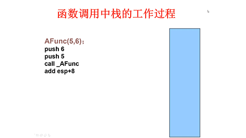
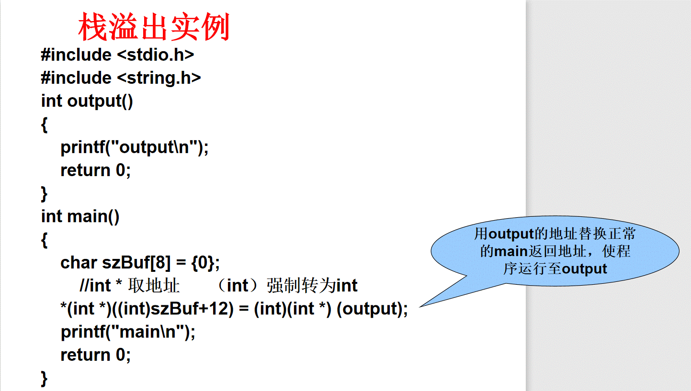
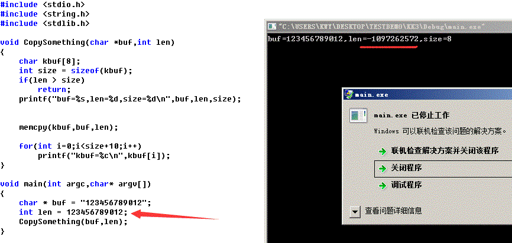
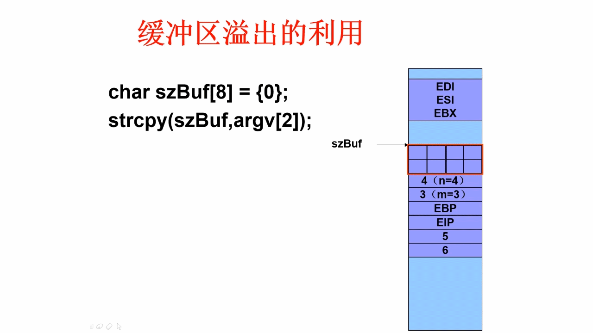

网络攻防实战技术之——缓冲区溢出篇
内容摘要
1. 缓冲区溢出相关概念
2. 缓冲区溢出原理
3. 溢出保护技术
4. 安全编程技术
学习要求
1. 了解缓冲区溢出的相关概念
2. 明确缓冲区溢出的危害
3. 理解栈溢出、堆溢出、整型溢出、格式化字符串溢出及文件流溢出的原因
4. 掌握安全编程技术
引言-缓冲区溢出的历史
1. 1988年的Morris蠕虫病毒，感染了6000多台机器：利用UNIX服务finger中的缓冲区溢出漏洞来获得访问权限，得到一个shell
2. 1996年前后，开始出现大量的缓冲区溢出攻击，因此引起人们的广泛关注
3. 源码开放的操作系统首当其冲
4. 随后，Windows系统下的缓冲区溢出也相继被发掘出来
5. 已经有一些非常经典细致的文章来介绍与缓冲区溢出有关的技术
6. 这两年广泛流行的一些Internet worms利用了一些缓冲区溢出漏洞
缓冲区溢出相关概念
缓冲区
从程序的角度，缓冲区就是应用程序用来保存用户输入数据、程序临时数据的内存空间
缓冲区的本质：数组
存储位置 ：Stack（栈） 、Heap（堆） 、数据段

缓冲区溢出
如果用户输入的数据长度超出了程序为其分配的内存空间，这些数据就会覆盖程序为其它数据分配的内存空间，形成所谓的缓冲区溢出

为什么会缓冲区溢出？
1. 在C语言中，指针和数组越界不保护是Buffer overflow的根源，而且，在C语言标准库中就有许多能提供溢出的函数，如strcat(), strcpy(), sprintf(), vsprintf(), bcopy(), gets()和scanf()
2. 通过指针填充数据
3. 不好的编程习惯
4. 溢出类型：栈溢出、堆溢出
利用缓冲区溢出进行的攻击
1. 基本的思想
通过修改某些内存区域，把一段恶意代码存储到一个buffer中，并且使这个buffer被溢出，以便当前进程被非法利用(执行这段恶意的代码)
2. 危害性
a. 在UNIX平台上，通过发掘Buffer Overflow, 可以获得一个交互式的shell
b. 在Windows平台上，可以上载并执行任何的代码
c. 溢出漏洞发掘起来需要较高的技巧和知识背景，但是，一旦有人编写出溢出代码，则用起来非常简单
d. 与其他的攻击类型相比，缓冲区溢出攻击
i. 不需要太多的先决条件
ii. 杀伤力很强
iii. 技术性强
e. 在Buffer Overflows攻击面前，防火墙往往显得很无奈
利用缓冲区溢出的攻击
1. 随便往缓冲区中填东西造成它溢出一般只会出现“分段错误”（Segmentation fault），而不能达到攻击的目的。
2. 如果覆盖缓冲区的是一段精心设计的机器指令序列，它可能通过溢出，改变返回地址，将其指向自己的指令序列，从而改变该程序的正常流程。
程序指令流被改变后……
1. 溢出之后，让程序执行我们指定的代码
a. 我们自己提供的一段代码
b. 系统现有的调用
2. 由于这段代码往往不能太长，所以需要精心设计，并且充分利用系统中现有的函数和指令
3. 对于不同的操作系统
a. Linux/Unix，尽可能地得到一个shell(最好是root shell)
b. Windows，一个可以远程建立连接的telnet会话
4. 通用的模式
a. 找到具有漏洞的程序(vulnerable program )
b. 编写出shellcode，
c. 然后编写把shellcode送到漏洞程序的程序(称为exploit)
Windows平台下缓冲区溢出
过程
1. 发现目标
a. 找到有漏洞的程序，如果在输入非正常字符串的时候，出现下图的情形

b. 或者从程序中找漏洞，用好的反汇编工具，加上耐心
i. 以一个特定的字符串作为线索，跟踪到strcpy这样的函数，看是否有边界检查
c. 编写shellcode
d. 编写exploit程序，并试验，直到成功
简单溢出实例
#include <stdio.h>
int main()
{
char name[8] = {0};
printf("Your name:");
gets(name);
printf("Hello,%s!",name);
return 0;
}
当程序输入内容超过8个字符串时，程序出错！

缓冲区溢出的危害
1. 应用程序异常
2. 系统不稳定甚至崩溃
3. 程序跳转到恶意代码，控制权被窃
缓冲区溢出原理
预备知识
1. 理解程序内存空间
2. 理解堆栈
3. 理解函数调用过程
4. 理解缓冲区溢出的原理
Windows环境下的堆栈
1. 程序空间由何构成？
2. 堆栈是什么?
3. 堆栈里面放的都是什么信息?
4. 程序使用超过了堆栈默认的大小怎么办?
5. 在一次函数调用中,堆栈是如何工作的?
程序在内存中的映像

栈
1. 栈是一块连续的内存空间——就像一个杯子
a. 先入后出
b. 生长方向与内存的生长方向正好相反, 从高地址向低地址生长
2. 每一个线程有自己的栈
a. 提供一个暂时存放数据的区域
3. 使用 POP / PUSH 指令来对栈进行操作
4. 使用 ESP 寄存器指向栈顶，EBP 指向栈帧底
栈内容
1. 函数的参数
2. 函数返回地址
3. EBP 的值
4. 一些通用寄存器 ( EDI , ESI … ) 的值
5. 当前正在执行的函数的局部变量
三个重要的寄存器
1. SP ( ESP )
即栈顶指针，随着数据入栈出栈而发生变化
2. BP ( EBP )
即基地址指针，用于标识栈中一个相对稳定的位置。通过 BP ,可以方便地引用函数参数以及局部变量
3. IP ( EIP )
即指令寄存器，在将某个函数的栈帧压入栈中时，其中就包含当前的 IP 值，即函数调用返回后下一个执行语句的地址
函数调用过程
1. 把参数压入栈
2. 保存指令寄存器中的内容，作为返回地址
3. 放入堆栈当前的基址寄存器
4. 把当前的栈指针 ( ESP )拷贝到基址寄存器，作为新的基地址
5. 为本地变量留出一定空间，把 ESP 减去适当的数值
函数调用中栈的工作过程
调用函数前
压入栈
上级函数传给 A 函数的参数
返回地址 ( EIP )
当前的 EBP
函数的局部变量
调用函数后
恢复 EBP
恢复 EIP
局部变量不作处理
例子1
#include <stdio.h>
#include <string.h>
void foo(const char* input){
char stack[10];
strcpy(stack,input);
}
void bar(){
printf("\nAh,I've been hacked!\n");
}
void main(int argc,char *argv[]){
foo(argv[1]);
}
//例子2
int main()
{
AFunc(5,6);
return 0;
}
int AFunc(int i,int j)
{
int m = 3;
int n = 4;
m = i;n = j;
BFunc(m,n);
return 8;
}
int BFunc(int i,int j)
{
int m = 1;
int n = 2;
m = i;
n = j;
return m;
}
函数调用中栈的工作过程

视频播放地址：https://www.bilibili.com/video/av39992797/
当缓冲区溢出发生时……

缓冲区溢出原理及其利用
缓冲区溢出种类
1. 栈溢出
2. 堆溢出
3. 整型溢出
4. 格式化字符串溢出
5. 其他溢出
栈溢出
特点
1. 缓冲区在栈中分配
2. 拷贝的数据过长
3. 覆盖了函数的返回地址或其它一些重要数据结构、函数指针
栈溢出实例

代码：
#include <stdio.h>
#include <string.h>
int output()
{
printf("output\n");
return 0;
}
int main()
{
char szBuf[8] = {0};
//int * 取地址 （int）强制转为int
*(int *)((int)szBuf+12) = (int)(int *) (output);
printf("main\n");
return 0;
}
PS：可以看到 main 字符 先 output 字符打印，即证明了main返回到了output函数！！！！


代码：
#include <stdio.h>
#include <string.h>
int BFunc(int i,int j)
{
int m = 1;
int n = 2;
m = i;
n = j;
return m;
}
int AFunc(int i,int j)
{
int m = 3;
int n = 4;
char szBuf[8] = {0};
*(int *)((int)szBuf+20) = (int)(int *)BFunc;
m = i;
n = j;
BFunc(m,n);
return 8;
}
int main()
{
char szBuf[8] = {0};
AFunc(5,6);
return 0;
}
PS：ppt上写的是
*(int *)((int)szBuf+20) = BFunc;
这样写编译不通过，不能单独使用BFunc函数名获得BFunc的地址
堆溢出
1. 堆和栈有何区别
a. 内存的动态分配与静态分配
b. 数据增长方向
2. 堆溢出特点
a. 缓冲区在堆中分配
b. 拷贝的数据过长
c. 覆盖了堆管理结构
#include <stdlib.h>
#include <stdio.h>
#include <string.h>
#define BUFLEN 32
int main(int argc, char* argv[ ])
{
char *buf1;
buf1 = (char*)malloc(BUFLEN);
strcpy(buf1,argv[1]);
printf("%s\n",buf1);
free(buf1);
return 0;
}
关于堆溢出
比较少引起人们的关注，原因在于
1. 比栈溢出难度更大
2. 需要结合其他的技术，比如
a. 函数指针改写
b. Vtable改写
c. Malloc库本身的漏洞
3. 对于内存中变量的组织方式有一定的要求
整型溢出
1. 宽度溢出（Widthness Overflow）
尝试存储一个超过变量表示范围的大数到变量中
2. 运算溢出（Arithmetic Overflow）
如果存储值是一个运算操作，稍后使用这个结果的程序的任何一部分都将错误的运行，因为这个计算结果是不正确的。
3. 符号溢出(Signedness Bug)
一个无符号的变量被看作有符号，或者一个有符号的变量被看作无符号
PS：memcpy指的是c和c++使用的内存拷贝函数，memcpy函数的功能是从源内存地址的起始位置开始拷贝若干个字节到目标内存地址中。
该函数的复制内存过程中，是不检查数据边界的。
宽度溢出示例
#include <stdio.h>
#include <string.h>
#include <stdlib.h>
void main(int argc,char* argv[])
{
unsigned short s; // 无符号short类型数据占 4 个字节
int i; // int类型数据占 8 个字节
char buf[80];
i = atoi(argv[1]);//将字符串转换为整型数据 ， 数据 太长 将被截断，转换出错
s = i;
if(s >= 80)
return;
memcpy(buf,argv[2],i);
}
运算溢出示例
void CopyIntArray(int *array,int len)
{
int* myarray,i;
myarray = malloc(len*sizeof(int));
if(myarray == NULL)
return;
for(i=0;i<len;i++)
myarray[i] = arrary[i];
}
符号溢出示例
当len变量数据足够长时，将导致len为负数，绕过len>size的判断，导致溢出
#include <stdio.h>
#include <string.h>
#include <stdlib.h>
void CopySomething(char *buf,int len)
{
char kbuf[8];
int size = sizeof(kbuf);
if(len > size)
return;
printf("buf=%s,len=%d,size=%d\n",buf,len,size);
memcpy(kbuf,buf,len);
for(int i=0;i<size+10;i++)
printf("kbuf=%c\n",kbuf[i]);
}
void main(int argc,char* argv[])
{
char * buf = "123456789012";
int len = 123456789012;
CopySomething(buf,len);
}

格式化字符串溢出
关键字
“%n”
产生原因
printf()是不定参数输入
printf()不会检查输入参数的个数
其他溢出类型
.data section溢出
PEB/TEB溢出
文件流溢出
归纳
溢出的共性
1. 大object向小object复制数据(字符串或整型)，容纳不下造成溢出
2. 溢出会覆盖一些关键性数据（返回地址、管理数据、异常处理或文件指针等）
3. 利用程序的后续流程，得到程序的控制权
缓冲区溢出的利用
char szBuf[8] = {0};
strcpy(szBuf,argv[2]);
argv[2]的内容：
1. 对EIP的填充
2. Shellcode

Shellcode
1. Shellcode其实就是一段可以完成某种特定功能的二进制代码
2. Shellcode的功能
a. 基本功能
1) 添加administrator or root组用户
2) 远程可用shell
3) 下载程序（Trojan or Rootkit）执行
b. 高级功能
1) 抗NIDS检测
2) 穿透防火墙
Shellcode不通用
Shellcode为什么不通用
1. 不同硬件平台
IBM PC、Alpha，PowerPC
2. 不同系统平台
Unix、Windows
3. 不同内核与补丁版本
4. 不同漏洞对字符串限制不同
利用缓冲区溢出的攻击实例
login: zch Password: Last login: Fri Jan 12 15:21:34 from 210.34.6.82 Sun Microsystems Inc.?? SunOS 5.6 Generic August 1997 You have mail. $ who zch pts/1 Jan 12 15:22 (linuxlab.xmu.edu.cn) $ lpset Usage: lpset [-n (system|xfn) ] [-x] [-a key=value] [-d key] (printer)#查看是否有lpset程序 $ ./lpset2 944 1600 2 Usages: ./lpset2 <bufsize> <offset> <align> Using RET address = 0xefffff40 ,Offset = 1600, Align= 2 # id uid=0(root) gid=1(other) #
入侵成功。lpset2源程序可在绿盟站点下载。
格式化字符串溢出攻击
格式化字符串溢出攻击
格式化字符串：就是在*printf()系列函数中按照一定的格式对数据进行输出，可以输出到标准输出，即printf()，也可以输出到文件句柄，字符串等。
黑客可以利用的几个条件：
(1)参数个数不固定造成访问越界数据
(2)利用%n/%hn格式符写入跳转地址
(3)利用附加格式符控制跳转地址的值
一个简单的例子:
#include <iostream>
using namespace std;
int main()
{
long retloc = 0;
long shell_addr = 0xffbeffac, reth, retl;
char buf[256], buf1[256];
reth = (shell_addr >> 16) & 0xffff ;
retl = (shell_addr >> 0) & 0xffff ;
sprintf(buf, "%%.%uu%%hn%%%uc%%hn", reth , retl - reth + 0x10000);
printf("Before overwrite: retloc = 0x%.8x\n", retloc);
printf(buf, 'A', &retloc, 'B', (char*)(&retloc) + 2 );
printf("After overwrite: retloc = 0x%.8x\n", retloc);
system("pause");
}
程序执行结果：
Before overwrite: retloc = 0x00000000
After overwrite: retloc = 0xffacffbe
程序执行分析：
printf("%.65470u%hn%65518c%hn", 'A', &retloc, 'B', (char*)(&retloc) + 2 );